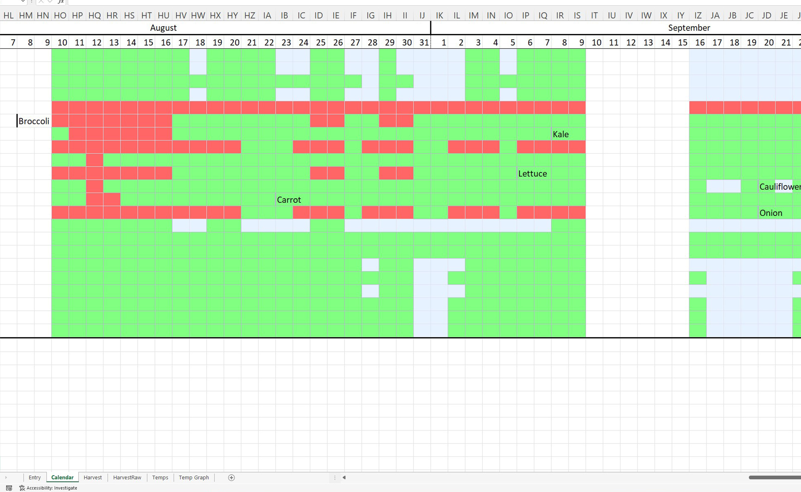

Firmware Engineer - Moment Energy
In this project, I made a workbook in Excel that generates a planting calendar based on plant-specific estimated planting days. These estimates are in the form of an amount of days relative to the frost dates, and are what's usually found when you search "when to plant x." I then made a soil temperature sensor with an ESP8266 and ds18b20, programmed to transmit data to a CSV file via a node.js server on my PC. The ESP is able to handle not being able to connect as it stores data on the flash memory and sends it the next time around. This data is used in excel to color the planting calendar based on plant-specific temperature preferences. Combined, this allows me to plan my seedlings based on the estimated planting dates, and then put them outside exactly when it gets warm/cold enough!
I then went on to create a web application dashboard to interact with my models. This inspired me to improve upon the project, and the result of that is currently in progress and can be viewed here.
This process is detailed in two videos I made about the project, one about the initial excel interface and another about the web application.
Firmware Engineer - Moment Energy

Garden Automation - Productivity Platform.

IoT Irrigation Controller.